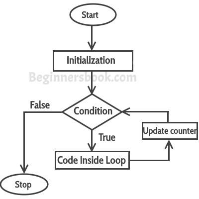

A loop is used for executing a block of statements repeatedly until a given condition returns false.
C For loop
This is one of the most frequently used loop in C programming.
Syntax of for loop:
for (initialization; condition test; increment or decrement)
{
//Statements to be executed repeatedly
}
Flow Diagram of For loop

Step 1: First initialization happens and the counter variable gets initialized.
Step 2: In the second step the condition is checked, where the counter variable is tested for the given condition, if the condition returns true then the C statements inside the body of for loop gets executed, if the condition returns false then the for loop gets terminated and the control comes out of the loop.
Step 3: After successful execution of statements inside the body of loop, the counter variable is incremented or decremented, depending on the operation (++ or –).
Example of For loop
#include <stdio.h>
int main()
{
int i;
for (i=1; i<=3; i++)
{
printf("%d\n", i);
}
return 0;
}
Output:
1 2 3
Various forms of for loop in C
I am using variable num as the counter in all the following examples –
1) Here instead of num++, I’m using num=num+1 which is same as num++.
for (num=10; num<20; num=num+1)
2) Initialization part can be skipped from loop as shown below, the counter variable is declared before the loop.
int num=10; for (;num<20;num++)
Note: Even though we can skip initialization part but semicolon (;) before condition is must, without which you will get compilation error.
3) Like initialization, you can also skip the increment part as we did below. In this case semicolon (;) is must after condition logic. In this case the increment or decrement part is done inside the loop.
for (num=10; num<20; )
{
//Statements
num++;
}
4) This is also possible. The counter variable is initialized before the loop and incremented inside the loop.
int num=10;
for (;num<20;)
{
//Statements
num++;
}
5) As mentioned above, the counter variable can be decremented as well. In the below example the variable gets decremented each time the loop runs until the condition num>10 returns false.
for(num=20; num>10; num--)
Nested For Loop in C
Nesting of loop is also possible. Lets take an example to understand this:
#include <stdio.h>
int main()
{
for (int i=0; i<2; i++)
{
for (int j=0; j<4; j++)
{
printf("%d, %d\n",i ,j);
}
}
return 0;
}
Output:
0, 0 0, 1 0, 2 0, 3 1, 0 1, 1 1, 2 1, 3
In the above example we have a for loop inside another for loop, this is called nesting of loops. One of the example where we use nested for loop is Two dimensional array.
Multiple initialization inside for Loop in C
We can have multiple initialization in the for loop as shown below.
for (i=1,j=1;i<10 && j<10; i++, j++)
What’s the difference between above for loop and a simple for loop?
1. It is initializing two variables. Note: both are separated by comma (,).
2. It has two test conditions joined together using AND (&&) logical operator. Note: You cannot use multiple test conditions separated by comma, you must use logical operator such as && or || to join conditions.
3. It has two variables in increment part. Note: Should be separated by comma.
Example of for loop with multiple test conditions
#include <stdio.h>
int main()
{
int i,j;
for (i=1,j=1 ; i<3 || j<5; i++,j++)
{
printf("%d, %d\n",i ,j);
}
return 0;
}
Leave a Reply